About 30-40 pictures were taken of both the calibration sheet and the object + tag. After capturing photos I calculated the camera intrinsics as shown in class (making a few adjustments to make things a little easier later). Below are two images of the frustum point cloud obtained from viser.

For the model, I used the MLP as suggested in the instructions illustrated below, with hyperparameters epochs = 2000, lr = .

Also below are hand picked correspondences for each image pair


To implement the NeRF, I began by loading the dataset. SInce I exported K, I could avoid having to recompute it (since I was having weird errors with the focal length). After that I ported my Positional Encoding method from part 1, implemented the NeRF (using a torch module this time, a bit trickier wince I couldn't just salp all the layers into a sequential block) and forward pass, and helpers as described in the project instructions. I also implemented a custom dataloader to make sampling images from the training set easier. After loading the images, I made a few smaller programs (commented out in main code) to ensure that rays were being calculated correctly, as well as implemented the test for volumetric rendering from the instructions. After that, I began training. Every 100 iteratons, to ensure my own sanity and that the model is training correctly, I have it render an image from the test set. As iterations continue the rendered image should start looking more and more like the ground truth/test image. You can see the progression and the ground truth image used below. PSNR and avg loss are also computed every 100 steps. With Colab GPU instances, the model should take about 20-40 minutes, largely depending on model width, number of source images, etc. Architecture: - Mostly as described in the instructions - Width: 256 (default) For the lego bulldozer, default hyperparameters were used as described in the instructions, listed again below: Hyperparameters: gradient steps/epochs = 2000 batch size = 10000 number of samples = 64 near, far threshholds = 2.0, 6.0
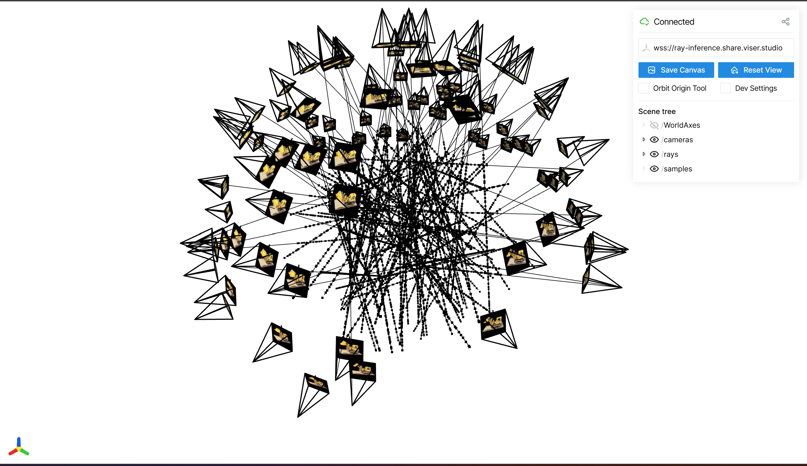

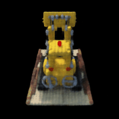
I ended up making a few changes to the code to make sure everything went smoothly. First, I cnaged how the dataset was loaded as I kept running into trouble wiht scaling and the focal point, which is why I cnaged the dataset to take the whole camera intrinsics matrix K instead of the focal point. I also added a bunch of debug code as I ran into trouble with converting from torch tensor to numpy ndarrays and vice versa. Overall, no major changes were made from code or hyperparameters presented in the project instructions aside from increasing the number of epochs to ensure the model had time to reach 23 PSNR. I've also noticed some fluctuation in the training of my custom dataset, but the number should be consistently within the 22.00-23.20 PSNR range. Hyperparameters: gradient steps/epochs = 3000 batch size = 10000 number of samples = 64 near, far threshholds = 0.02, 0.7

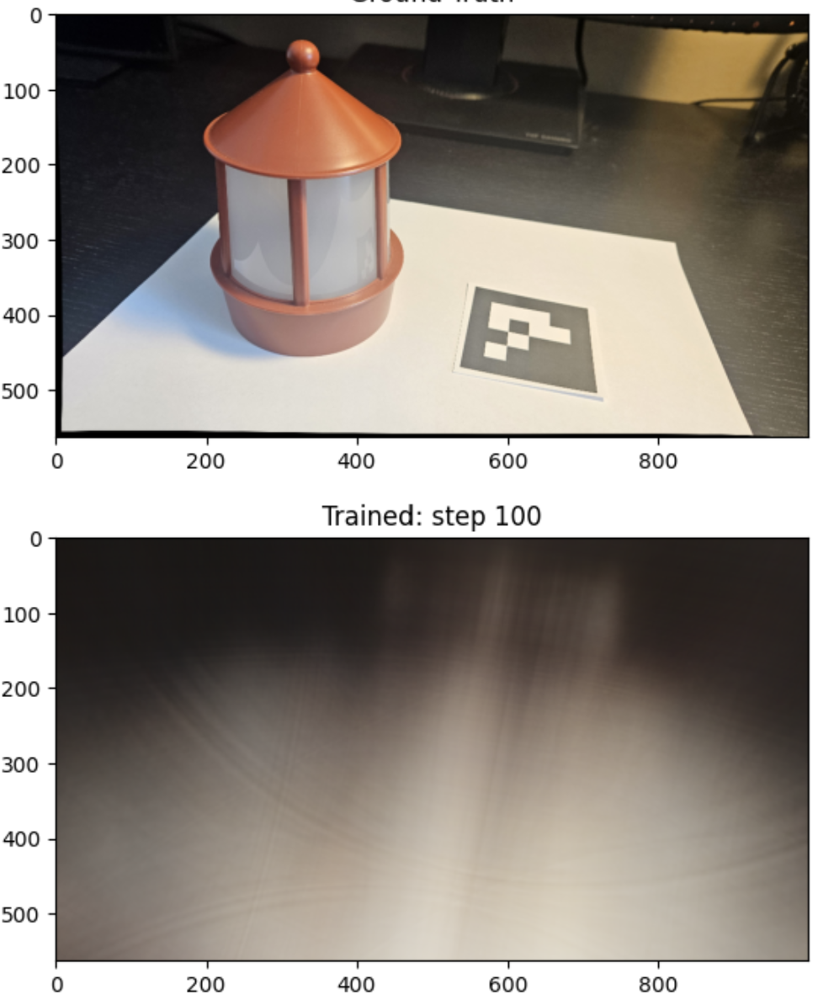
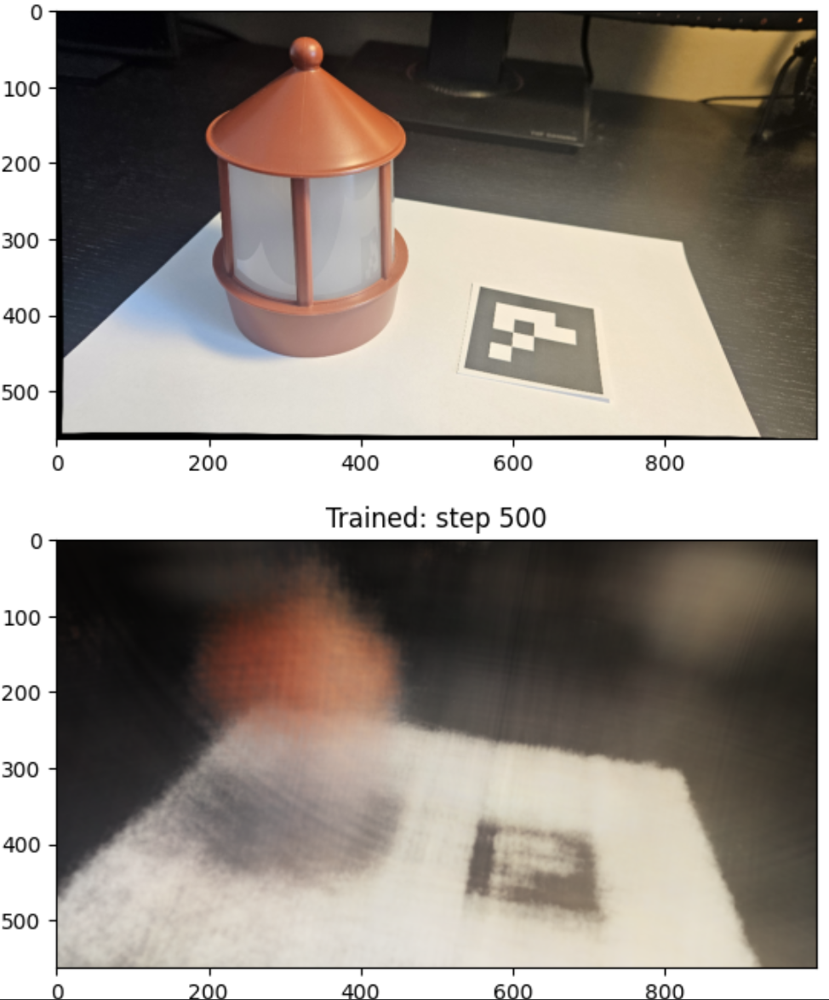
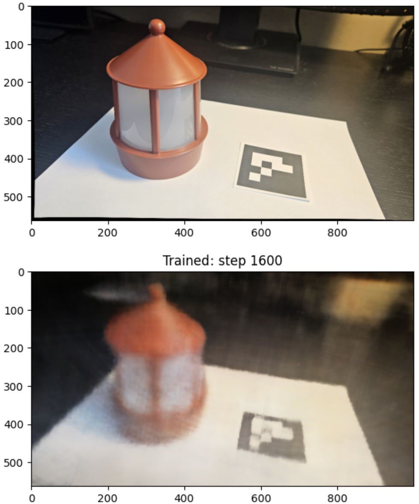
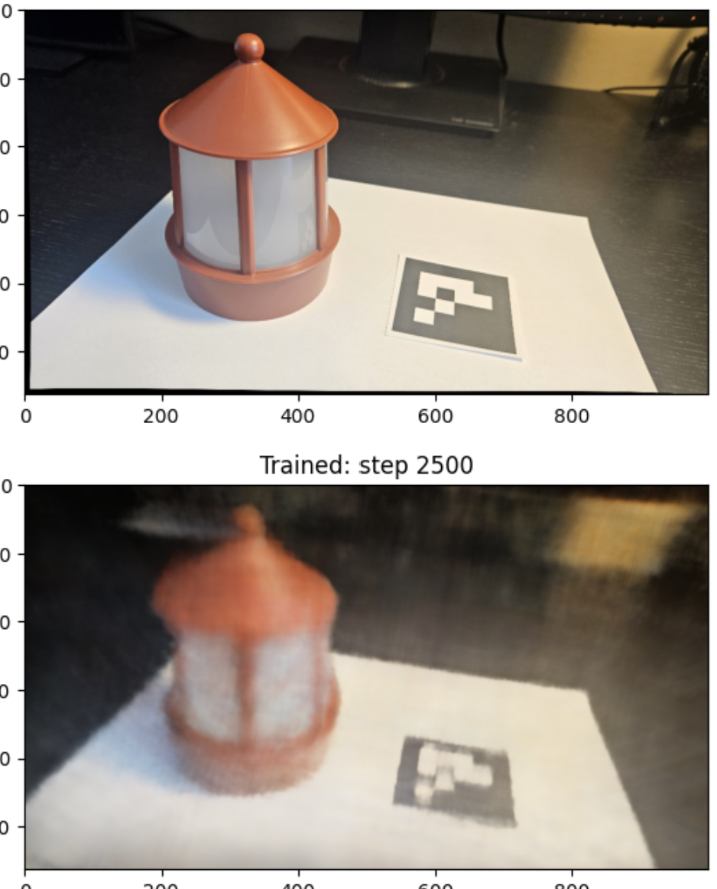
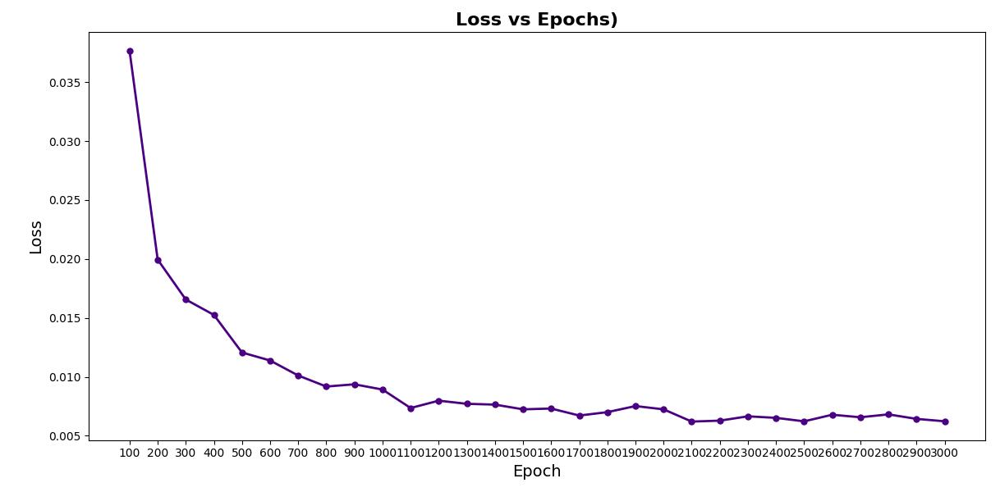
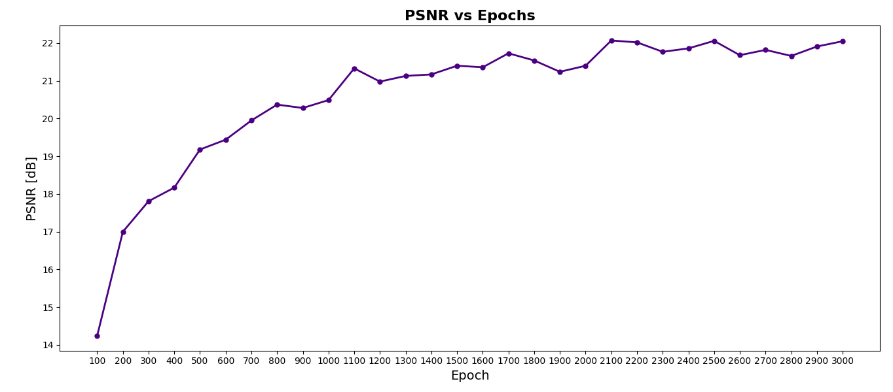
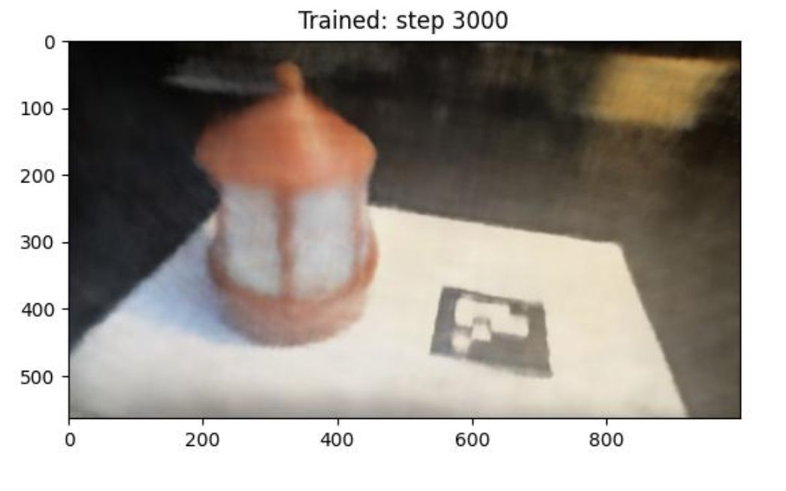
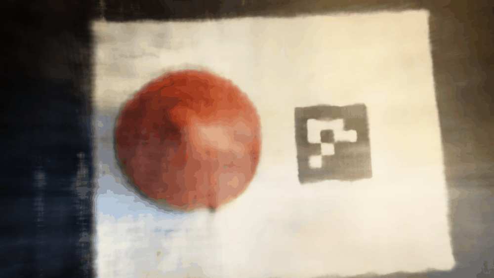
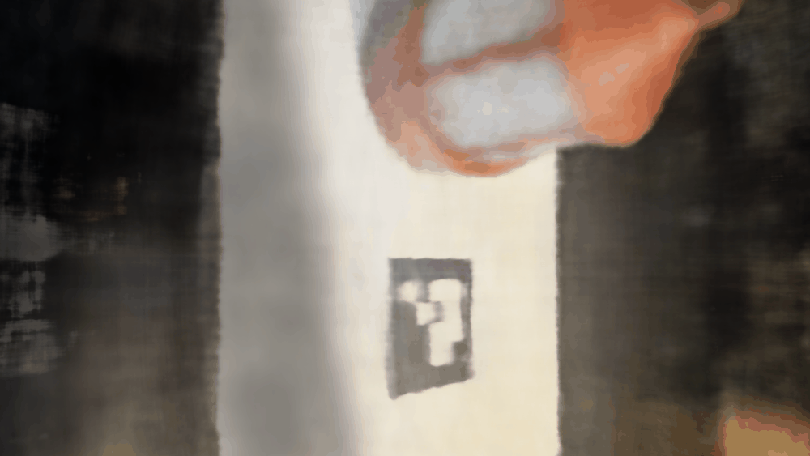
Anything not found here can be found in depth in the submission folder, including model checkpoints, renders, and datasets!